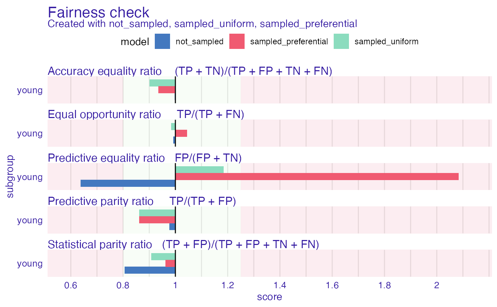

Method of bias mitigation. Similarly to reweight this method computes desired number of observations if the protected variable is independent
from y and on this basis decides if this subgroup with certain class (+ or -) should be more or less numerous. Than performs oversampling or undersampling depending on the case.
If type of sampling is set to 'preferential' and probs are provided than instead of uniform sampling preferential sampling will be performed. Preferential sampling depending on the case
will sample observations close to border or far from border.
resample(protected, y, type = "uniform", probs = NULL, cutoff = 0.5)
| protected | factor, protected variables with subgroups as levels (sensitive attributes) |
|---|---|
| y | numeric, vector with classes 0 and 1, where 1 means favorable class. |
| type | character, either (default) 'uniform' or 'preferential' |
| probs | numeric, vector with probabilities for preferential sampling |
| cutoff | numeric, threshold for probabilities |
numeric vector of indexes
This method was implemented based on Kamiran, Calders 2011 https://link.springer.com/content/pdf/10.1007/s10115-011-0463-8.pdf
data("german") data <- german data$Age <- as.factor(ifelse(data$Age <= 25, "young", "old")) y_numeric <- as.numeric(data$Risk) -1 rf <- ranger::ranger(Risk ~., data = data, probability = TRUE, seed = 123) u_indexes <- resample(data$Age, y = y_numeric) rf_u <- ranger::ranger(Risk ~., data = data[u_indexes, ], probability = TRUE, seed = 123) explainer_rf <- DALEX::explain(rf, data = data[, -1], y = y_numeric, label = "not_sampled")#> Preparation of a new explainer is initiated #> -> model label : not_sampled #> -> data : 1000 rows 9 cols #> -> target variable : 1000 values #> -> predict function : yhat.ranger will be used ( default ) #> -> predicted values : numerical, min = 0.08005718 , mean = 0.6982438 , max = 0.9971792 #> -> model_info : package ranger , ver. 0.12.1 , task classification ( default ) #> -> residual function : difference between y and yhat ( default ) #> -> residuals : numerical, min = -0.7430213 , mean = 0.001756243 , max = 0.657119 #> A new explainer has been created!#> Preparation of a new explainer is initiated #> -> model label : sampled_uniform #> -> data : 1000 rows 9 cols #> -> target variable : 1000 values #> -> predict function : yhat.ranger will be used ( default ) #> -> predicted values : numerical, min = 0.03272652 , mean = 0.72498 , max = 0.9978712 #> -> model_info : package ranger , ver. 0.12.1 , task classification ( default ) #> -> residual function : difference between y and yhat ( default ) #> -> residuals : numerical, min = -0.9932931 , mean = -0.02498003 , max = 0.7677545 #> A new explainer has been created!p_indexes <- resample(data$Age, y = y_numeric, type = "preferential", probs = explainer_rf$y_hat) rf_p <- ranger::ranger(Risk ~., data = data[p_indexes, ], probability = TRUE, seed = 123) explainer_rf_p <- DALEX::explain(rf_p, data = data[, -1], y = y_numeric, label = "sampled_preferential")#> Preparation of a new explainer is initiated #> -> model label : sampled_preferential #> -> data : 1000 rows 9 cols #> -> target variable : 1000 values #> -> predict function : yhat.ranger will be used ( default ) #> -> predicted values : numerical, min = 0.03909683 , mean = 0.6954251 , max = 0.9979214 #> -> model_info : package ranger , ver. 0.12.1 , task classification ( default ) #> -> residual function : difference between y and yhat ( default ) #> -> residuals : numerical, min = -0.9933262 , mean = 0.004574909 , max = 0.9203419 #> A new explainer has been created!fobject <- fairness_check(explainer_rf, explainer_rf_u, explainer_rf_p, protected = data$Age, privileged = "old")#> Creating fairness object #> -> Privileged subgroup : character ( Ok ) #> -> Protected variable : factor ( Ok ) #> -> Cutoff values for explainers : 0.5 ( for all subgroups ) #> -> Fairness objects : 0 objects #> -> Checking explainers : 3 in total ( compatible ) #> -> Metric calculation : 13/13 metrics calculated for all models #> Fairness object created succesfullyfobject#> #> Fairness check for models: not_sampled, sampled_uniform, sampled_preferential #> #> not_sampled passes 4/5 metrics #> Total loss: 0.2756813 #> #> sampled_uniform passes 4/5 metrics #> Total loss: 0.4071498 #> #> sampled_preferential passes 3/5 metrics #> Total loss: 0.4225934 #>plot(fobject)